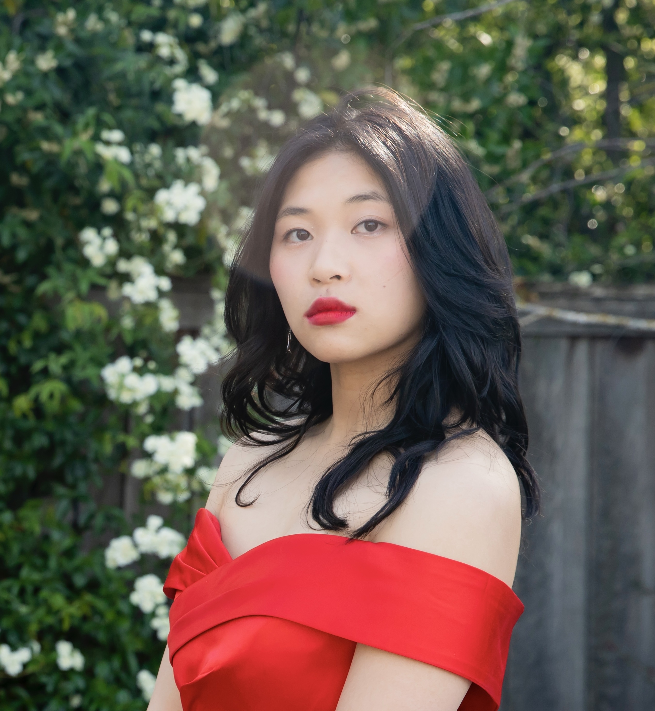

About Me

Hello! As previously mentioned, my name is Alison Ding. I'm currently studying Computer
Science at Carnegie Mellon University, and am considering a concentration in Computer Systems
or Machine Learning. I also have an ambition to teach myself cybersecurity/hacking —
a goal I've been slowly working towards by playing OverTheWire's Wargames.
I also love art, so I've been exploring creative coding and generative art as of late.
You can find one of my projects here, and see more on my projects page.
When I'm not working on academics, I like to draw. If you're curious, you can browse some
of my artworks here!